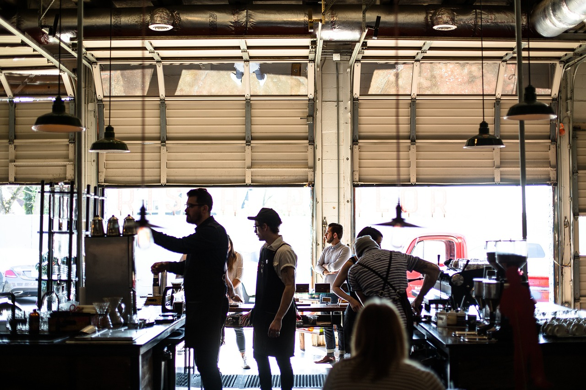

Our Story
GHC started as a project of two friends and passionate baristas, John & Don in 2010. Believing as much in the hand of an educated barista as in the innovative equipment of the our ever-growing industry, GHC offers a full spectrum of brewing opportunities – from pour overs to syphon pots to finely executed espresso beverages. Each cup of coffee is made with love, precision and care.
